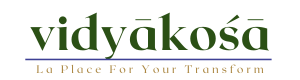
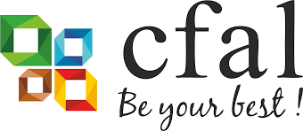

Teaching Roles
Teaching has been a steady companion in my learning journey. I don’t claim to be an expert —
I just enjoy understanding things deeply and sharing what I learn along the way.
It keeps me curious, grounded, and constantly learning.
Teaching Assistant Roles
Teaching Assistant – Hardware Acceleration & Optimization for Machine Learning (2022-2024)
Department of Electronic Systems Engineering (DESE), IISc Bangalore
Post-Graduate & PhD-level Course • Academic Years: 2022–2023 & 2023–2024
I served as a Teaching Assistant for the post-graduate and PhD-level course
“Hardware Acceleration & Optimization for Machine Learning (HAOML)”, guided by
Prof. Chetan Singh Thakur. The course bridges theoretical ML with
real-world embedded deployment, helping students implement and optimize ML models on
resource-constrained hardware platforms.
I worked closely with Banhimitra Kundu and Ketan Chaudhary,
collaborating on hardware-centric engineering and real system building.
My contributions:
- Guided students in implementing TinyML inference on microcontrollers
- Demonstrated deployment constraints — memory, compute budgets, quantization & latency trade-offs
- Mentored debugging real-time pipelines and optimizing inference performance
- Facilitated hands-on labs, hardware setup & final project showcases
The course emphasizes learning by building, helping students translate ideas into functioning hardware prototypes.
🎥 Video showcase of student project outcomes
Watch on YouTube →
Teaching Assistant – Mathematical Foundations for Machine Learning (2025)
NPTEL Course under Prof. Ashok Rao & Prof. Arulalan Rajan
Worked as a Teaching Assistant for the NPTEL course “Mathematical Foundations for
Machine Learning”, strengthening conceptual depth through animated visualizations using
Manim.
Contributions included:
- Geometric visualization of linear algebra concepts
- Animations for eigenvectors, SVD, gradient descent & optimization
- Helping learners build conceptual intuition rather than formula-based thinking
🎓 Invitation to Enroll
Highly recommended for students beginning ML, engineers transitioning to Data Science,
or anyone seeking clarity.
📚 Enroll on NPTEL:
Go to course page →
Teaching Aid & Training
Teaching Aid – TalentSprint Deep Learning Cohorts (2022-2025)
5+ online TinyML cohorts • 60+ working professionals per batch •
Remote hardware debugging & hands-on learning experience
I also served as a teaching aid for the Deep Learning Cohort at TalentSprint,
supporting the module on TinyML. This was a unique hands-on program created for
working professionals and industry engineers exploring practical deployment of ML on
resource-constrained hardware.
Over the past few years, we have conducted this program across more than five cohorts,
entirely online. Working with hardware remotely made it both challenging and deeply meaningful.
Together with Banhimitra Kundu, and under the guidance of
Prof. Chetan Singh Thakur, we supported over 60 participants per cohort as they
navigated real-time debugging, setup issues, and hands-on experimentation from a distance.
Supporting learners from diverse backgrounds, across different time hardware environments,
taught me a great deal about patience, clarity in communication, and designing learning experiences
that stay grounded in practicality and simplicity.
Embedded Systems & TinyML Trainer – Vidyakosa (2023 - 2025)

At Vidyakosha, I work with undergraduate students on developing a strong
foundation in embedded systems, sensing technologies, and hardware–software co-design. The focus
has been on building practical understanding rather than textbook definitions.
I help teach concepts such as microcontroller programming, sensor integration,
communication protocols, and deploying ML models on microcontrollers. One of the core themes has
been learning to program through the lens of compute and power awareness — understanding
why efficiency matters and how engineering choices shape system behavior in the real world.
These sessions are hands-on and exploratory, where students learn by building small systems,
experimenting, and debugging together. It has been a meaningful experience to watch young
engineers grow confident with hardware and discover the joy of building.
Makerspace & Academic Coordinator – CFAL (2017 - 2025)

I have also been associated with the Centre for Advanced Learning (CFAL) in Mangalore,
serving in different supportive roles over the years. My time there shaped a significant part of my
thinking about education and learning.
I worked as an Makerspace Coordinator and later as a Academic Coordinator,
where I helped develop hands-on learning environments that encouraged students to explore technology
through robotics education, early coding exposure, electronics projects,
and open-ended tinkering activities. The focus was on learning by building, experimenting, and understanding
concepts beyond textbooks and exam preparation.
Supporting teachers and students in these programs taught me a great deal about pacing, clarity,
and empathy in education. More than anything, CFAL helped me understand the value of curiosity-driven
learning and the importance of creating environments where students feel free to explore rather than
perform.
Teaching has never been about achievement for me — it’s simply a way to stay curious, learn deeply, and contribute in a small way wherever I can.